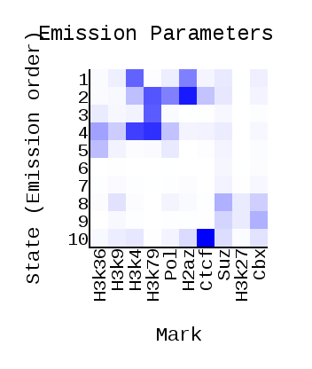
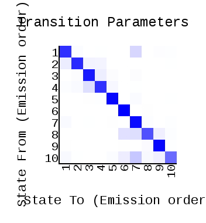
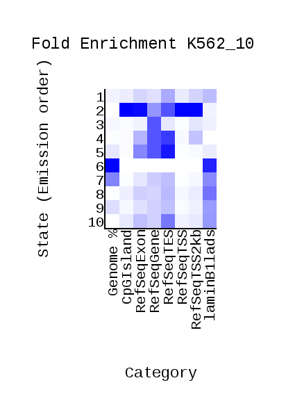
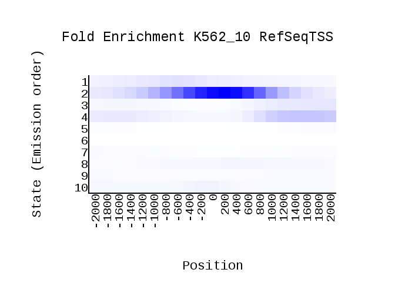
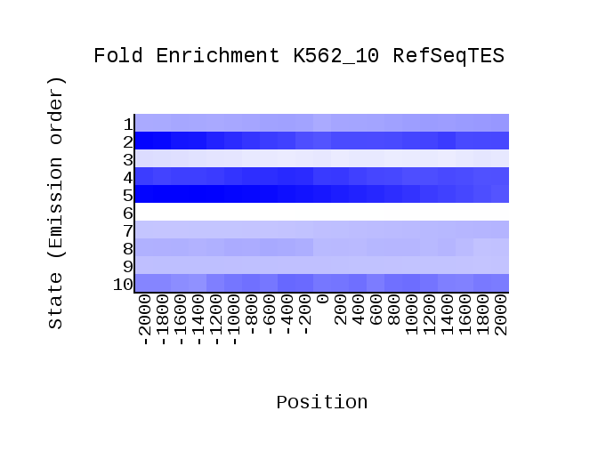

<center><h1>ChromHMM Report</h1></center>
Input Directory: binarizedData<br>
Output Directory: output_data<br>
Number of States: 10<br>
Assembly: hg19<br>
Full ChromHMM command: LearnModel -p 0 binarizedData output_data 10 hg19
<h1>Model Parameters</h1>
<br>
<li><a href="emissions_10.svg">Emission Parameter SVG File</a><br>
<li><a href="emissions_10.txt">Emission Parameter Tab-Delimited Text File</a><br>
<br>
<li><a href="transitions_10.svg">Transition Parameter SVG File</a><br>
<li><a href="transitions_10.txt">Transition Parameter Tab-Delimited Text File</a><br><br>
<li><a href="model_10.txt">All Model Parameters Tab-Delimited Text File</a> <br>
<h1>Genome Segmentation Files</h1>
<li><a href="K562_10_segments.bed">K562_10 Segmentation File (Four Column Bed File)</a><br>
<br>
Custom Tracks for loading into the <a href="http://genome.ucsc.edu">UCSC Genome Browser</a>:<br>
<li><a href=K562_10_dense.bed>K562_10 Browser Custom Track Dense File</a> <br>
<li><a href=K562_10_expanded.bed>K562_10 Browser Custom Track Expanded File</a><br>
<h1>State Enrichments</h1>
<h2>K562_10 Enrichments</h2>
 <br>
<li><a href="K562_10_overlap.svg">K562_10 Overlap Enrichment SVG File</a><br>
<li><a href="K562_10_overlap.txt">K562_10 Overlap Enrichment Tab-Delimited Text File</a><br>
 <br>
<li><a href="K562_10_RefSeqTSS_neighborhood.svg">K562_10_RefSeqTSS_neighborhood Enrichment SVG File</a><br>
<li><a href="K562_10_RefSeqTSS_neighborhood.txt">K562_10_RefSeqTSS_neighborhood Enrichment Tab-Delimited Text File</a><br>
 <br>
<li><a href="K562_10_RefSeqTES_neighborhood.svg">K562_10_RefSeqTES_neighborhood Enrichment SVG File</a><br>
<li><a href="K562_10_RefSeqTES_neighborhood.txt">K562_10_RefSeqTES_neighborhood Enrichment Tab-Delimited Text File</a><br>
